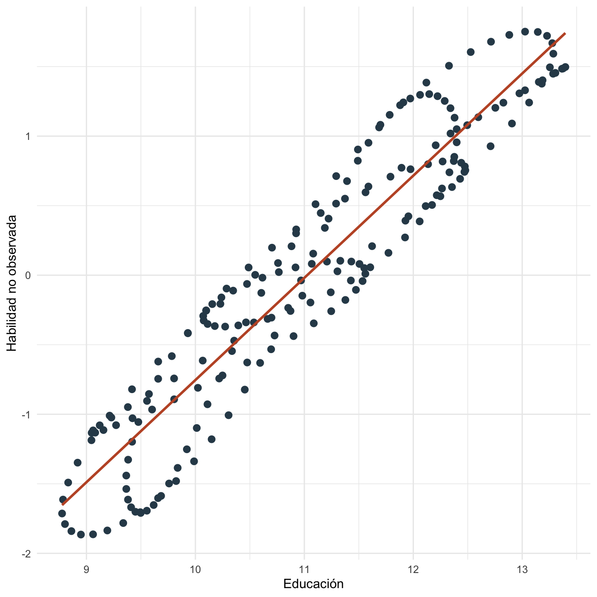

Capítulo 22 Endogeneidad: práctica
22.1 Objetivos de la práctica
Al finalizar esta práctica podrás:
- Simular un caso donde una variable omitida sesga MCO.
- Comparar un modelo corto y un modelo largo.
- Mostrar sesgo de atenuación por error de medición en un regresor.
- Reproducir el ejercicio en R, Stata y Python.
- Interpretar por qué el problema no se resuelve solo con errores robustos.
22.2 Pregunta aplicada
Queremos estudiar el retorno de la educación sobre salarios. La pregunta aplicada es:
¿Qué pasa si educación está relacionada con habilidad no observada y omitimos esa habilidad de la regresión?
El modelo verdadero de la simulación será:
\[ \log(salario_i)=\beta_0+\beta_1educ_i+\beta_2habilidad_i+\epsilon_i. \]
22.3 Datos
Creamos datos reproducibles. La habilidad afecta salarios y también está relacionada con educación.
n_end <- 200
i_end <- 1:n_end
habilidad <- scale(sin(i_end / 7) + cos(i_end / 11))[, 1]
educ <- 11 + 1.2 * habilidad + 0.6 * sin(i_end / 5)
epsilon <- 0.25 * sin(i_end / 3)
lwage <- 1.5 + 0.08 * educ + 0.35 * habilidad + epsilon
datos_end <- data.frame(
lwage = lwage,
educ = educ,
habilidad = habilidad
)
kable(head(datos_end, 12), digits = 3, caption = "Primeras observaciones de la base de endogeneidad")| lwage | educ | habilidad |
|---|---|---|
| 2.926 | 12.342 | 1.019 |
| 3.060 | 12.597 | 1.136 |
| 3.171 | 12.827 | 1.240 |
| 3.250 | 13.026 | 1.330 |
| 3.294 | 13.187 | 1.402 |
| 3.301 | 13.305 | 1.454 |
| 3.271 | 13.375 | 1.487 |
| 3.210 | 13.396 | 1.497 |
| 3.124 | 13.365 | 1.484 |
| 3.022 | 13.284 | 1.448 |
| 2.913 | 13.152 | 1.389 |
| 2.806 | 12.974 | 1.307 |
ggplot(datos_end, aes(x = educ, y = habilidad)) +
geom_point(color = "#2f4858", size = 2.4) +
geom_smooth(method = "lm", se = FALSE, color = "#C0562F", linewidth = 1) +
labs(x = "Educación", y = "Habilidad no observada") +
theme_minimal()
Figura 22.1: Relación entre educación y habilidad en la simulación
22.4 Estimación en R
Estimamos primero un modelo corto que omite habilidad y luego el modelo largo que sí la incluye.
modelo_corto_end <- lm(lwage ~ educ, data = datos_end)
modelo_largo_end <- lm(lwage ~ educ + habilidad, data = datos_end)
tabla_corto_end <- coef(summary(modelo_corto_end))
tabla_largo_end <- coef(summary(modelo_largo_end))
beta_educ_corto_end <- unname(coef(modelo_corto_end)[["educ"]])
beta_educ_largo_end <- unname(coef(modelo_largo_end)[["educ"]])
se_educ_corto_end <- tabla_corto_end["educ", "Std. Error"]
se_educ_largo_end <- tabla_largo_end["educ", "Std. Error"]
beta_hab_largo_end <- unname(coef(modelo_largo_end)[["habilidad"]])
cor_educ_hab_end <- cor(datos_end$educ, datos_end$habilidad)
sesgo_observado_end <- beta_educ_corto_end - beta_educ_largo_end
kable(
data.frame(
modelo = c("Corto: omite habilidad", "Largo: incluye habilidad"),
beta_educacion = c(beta_educ_corto_end, beta_educ_largo_end),
error_estandar = c(se_educ_corto_end, se_educ_largo_end)
),
digits = 4,
caption = "Comparación entre modelo corto y modelo largo"
)| modelo | beta_educacion | error_estandar |
|---|---|---|
| Corto: omite habilidad | 0.3426 | 0.0116 |
| Largo: incluye habilidad | 0.0938 | 0.0294 |
Ahora simulamos error de medición clásico en educación.
error_medicion <- 0.8 * sin(i_end / 4)
datos_end$educ_medida <- datos_end$educ + error_medicion
modelo_medicion_end <- lm(lwage ~ educ_medida + habilidad, data = datos_end)
tabla_medicion_end <- coef(summary(modelo_medicion_end))
beta_educ_medida_end <- unname(coef(modelo_medicion_end)[["educ_medida"]])
se_educ_medida_end <- tabla_medicion_end["educ_medida", "Std. Error"]
kable(
data.frame(
modelo = c("Educación verdadera", "Educación medida con error"),
beta_educacion = c(beta_educ_largo_end, beta_educ_medida_end),
error_estandar = c(se_educ_largo_end, se_educ_medida_end)
),
digits = 4,
caption = "Sesgo de atenuación por error de medición en educación"
)| modelo | beta_educacion | error_estandar |
|---|---|---|
| Educación verdadera | 0.0938 | 0.0294 |
| Educación medida con error | 0.0239 | 0.0186 |
22.5 Interpretación
La correlación entre educación y habilidad es 0.943. Al omitir habilidad, la pendiente de educación es 0.343; al incluirla, es 0.094.
La diferencia entre ambas pendientes es 0.249. Esa diferencia ilustra el sesgo por variable omitida en esta base simulada. Cuando medimos educación con error, la pendiente cae a 0.024, consistente con la intuición del sesgo de atenuación.
En datos reales, normalmente no observamos habilidad. La comparación corto/largo aquí es pedagógica: muestra el mecanismo del sesgo, no una receta automática para resolverlo.
22.6 Estimación en Stata
El ejercicio puede reproducirse en Stata:
clear
set obs 200
gen i = _n
gen habilidad = sin(i/7) + cos(i/11)
summ habilidad
replace habilidad = (habilidad - r(mean)) / r(sd)
gen educ = 11 + 1.2 * habilidad + 0.6 * sin(i/5)
gen epsilon = 0.25 * sin(i/3)
gen lwage = 1.5 + 0.08 * educ + 0.35 * habilidad + epsilon
reg lwage educ
reg lwage educ habilidad
gen educ_medida = educ + 0.8 * sin(i/4)
reg lwage educ_medida habilidadLos resultados esperados son los mismos coeficientes que Stata debe reproducir si usa la misma base y especificación:
| Modelo | Pendiente educación aproximada | Error estándar aproximado |
|---|---|---|
| Corto | 0.343 | 0.012 |
| Largo | 0.094 | 0.029 |
| Con educación medida con error | 0.024 | 0.019 |
22.7 Estimación en Python y Google Colab
Para correr esta práctica en Google Colab:
Luego ejecuta:
import numpy as np
import pandas as pd
import statsmodels.api as sm
n = 200
i = np.arange(1, n + 1)
habilidad = np.sin(i / 7) + np.cos(i / 11)
habilidad = (habilidad - habilidad.mean()) / habilidad.std(ddof=1)
educ = 11 + 1.2 * habilidad + 0.6 * np.sin(i / 5)
epsilon = 0.25 * np.sin(i / 3)
lwage = 1.5 + 0.08 * educ + 0.35 * habilidad + epsilon
datos = pd.DataFrame({"lwage": lwage, "educ": educ, "habilidad": habilidad})
corto = sm.OLS(datos["lwage"], sm.add_constant(datos[["educ"]])).fit()
largo = sm.OLS(datos["lwage"], sm.add_constant(datos[["educ", "habilidad"]])).fit()
datos["educ_medida"] = datos["educ"] + 0.8 * np.sin(i / 4)
medicion = sm.OLS(datos["lwage"], sm.add_constant(datos[["educ_medida", "habilidad"]])).fit()
print(corto.summary())
print(largo.summary())
print(medicion.summary())Los resultados esperados son los mismos coeficientes que Python debe reproducir si usa la misma base y especificación.
22.8 Comparación R, Stata y Python
Los tres programas muestran el mismo fenómeno: cuando una variable omitida está correlacionada con educación y afecta salarios, el modelo corto no estima el mismo parámetro que el modelo largo.
| Tarea | R | Stata | Python |
|---|---|---|---|
| Modelo corto | lm(lwage ~ educ) |
reg lwage educ |
sm.OLS(y, X).fit() |
| Modelo largo | lm(lwage ~ educ + habilidad) |
reg lwage educ habilidad |
sm.OLS(y, X_largo).fit() |
| Error de medición | crear educ_medida |
gen educ_medida |
crear columna en pandas |
22.9 Errores frecuentes en la práctica
- Pensar que robustos corrigen endogeneidad. Los errores robustos corrigen varianzas, no correlación entre \(X\) y \(\epsilon\).
- Agregar controles sin teoría. Un control mal elegido puede cambiar la interpretación o introducir sesgo.
- Confundir correlación con identificación. Que educación prediga salarios no implica que la pendiente sea causal.
- Olvidar el error de medición. Medir mal un regresor puede sesgar el coeficiente incluso si el modelo conceptual es correcto.
22.10 Ejercicios computacionales
- Cambia la relación entre habilidad y educación. ¿Cómo cambia el sesgo del modelo corto?
- Cambia el efecto de habilidad sobre salarios. ¿Qué pasa con la diferencia entre modelo corto y largo?
- Aumenta la magnitud del error de medición en educación. ¿Qué ocurre con la pendiente?
- Reproduce el ejercicio en Stata o Python y verifica que los coeficientes coincidan con R.
- Resuelve las partes A, B y E del Problem Set 4: Endogeneidad y variables instrumentales.